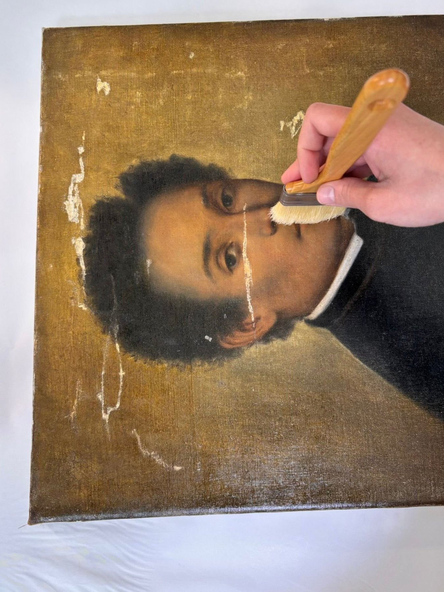
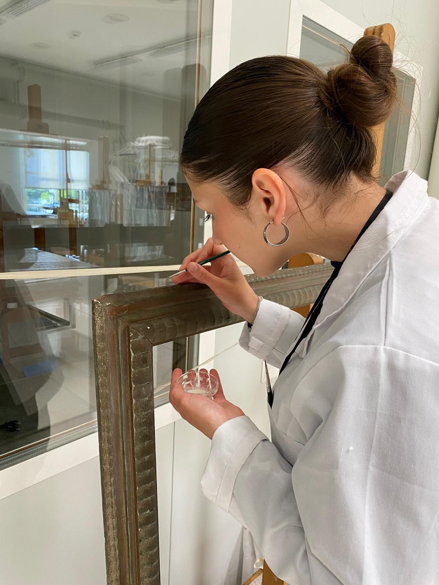

Parroquia de Sant Agustí Raval, Barcelona · 2025




IRISRESTAURA reúne procesos de restauración, documentación e intervención sobre obra pictórica y soportes históricos, con una mirada técnica, sensible y limpia.
Una restauración no va de borrar el tiempo. Va de entenderlo. Cada pieza exige observar, documentar, probar y actuar con precisión para devolver legibilidad sin inventarse lo que la obra no pide.
Esta web funciona como portfolio vivo: una selección de procesos, detalles y resultados de Iris en su camino como conservadora-restauradora.
Una selección de prácticas, intervenciones y proyectos personales. Cada uno cuenta su propio recorrido: estado inicial, decisiones, proceso y resultado.
Una web de restauración tiene que oler a método. Si solo enseña fotos bonitas, parece hobby. Si enseña proceso, empieza a parecer oficio.
Lectura del estado de conservación, patologías visibles y comportamiento de la superficie.
Ensayos previos y controlados para definir una intervención compatible y segura.
Limpieza, consolidación o reintegración en función de lo que pide cada pieza.
Registro visual del antes, durante y después para explicar el proceso con claridad.

Iris está finalizando sus estudios de restauración y empieza a desarrollar intervenciones propias, combinando sensibilidad por la obra, método de taller y una atención especial al detalle.
IRISRESTAURA nace como una forma clara de enseñar su proceso: no solo el resultado final, también la mano, el criterio y las decisiones que hay detrás de cada pieza.
Ver InstagramPara consultas, encargos pequeños o seguimiento de nuevos trabajos, puedes contactar con Iris a través de Instagram.